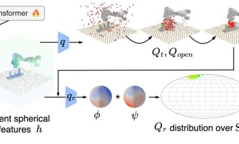
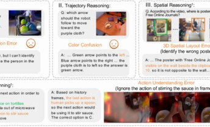
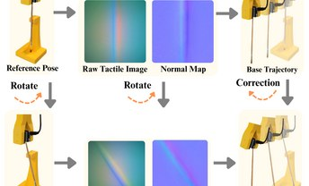
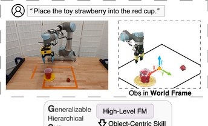
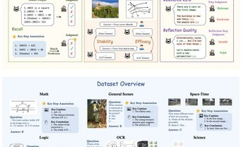
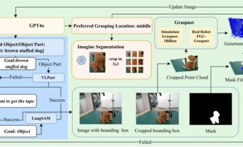

Yu Qi
Ph.D. Student in Computer Science, Northeastern University
Email / Google Scholar / GitHub / CV
Hi, I'm Yu Qi, a Computer Science Ph.D. student at Northeastern University, advised by Prof. Lawson L. S. Wong. In 2023 I received my B.S. in Computer Science from Peking University.
I work in robotic manipulation. My research centers on one question: how can embodied systems generalize — to objects, tasks, and environments they were never trained on? Three threads run through my work:
- How does data shape generalization? I build scalable data collection and evaluation that expose the hidden biases limiting compositional generalization, then reallocate data to close the gap. Scale Up Strategically · Two by Two
- How do pre-trained models help — and where do they fail? I diagnose and enhance the embodied and reasoning abilities of foundation and video models, mapping precisely where their generalization falls apart. BEAR · MME-CoT · MME-CoF · MME-CoF-Pro
- How can we enable embodied systems to reason and act reliably? I bring reasoning and structural inductive biases — equivariance, object-centric skills — into manipulation for sample-efficient, generalizable control. ThinkGrasp · EquAct · Generalizable Hierarchical Skill Learning
Education
- 2023 – PresentNortheastern University
Ph.D. in Computer Science - 2019 – 2023Peking University
B.S. in Computer Science, School of EECS
News
- 2026🎉 MME-CoF-Pro accepted to ECCV 2026.
- 2026🎉 Papers accepted to ICLR 2026, CVPR 2026, and ICML 2026.
- 2025🎉 Papers accepted to ICML 2025 and CVPR 2025.
- 2024🤖 ThinkGrasp accepted to CoRL 2024.
Publications
Bold = me. Full list on Google Scholar.
 arXiv
arXiv2026
Scale Up Strategically: Learning Compositional Generalization via Bias-Aware Evaluation and Data Collection for Robotic Manipulation
 arXiv
arXiv2026
Action Map Policy: Learning 3D Closed-loop Manipulation via Pixel Classification
ECCV
2026
2026
MME-CoF-Pro: Evaluating Reasoning Coherence in Video Generative Models with Text and Visual Hints

ICLR2026
EquAct: An SE(3)-Equivariant Multi-Task Transformer for 3D Robotic Manipulation
 CVPR
CVPR2026
Are Video Models Ready as Zero-Shot Reasoners? An Empirical Study with the MME-CoF Benchmark

ICML2026
BEAR: Benchmarking and Enhancing Multimodal Language Models for Atomic Embodied Capabilities

RA-L2025
Residual Rotation Correction using Tactile Equivariance

RA-L2025
Generalizable Hierarchical Skill Learning via Object-Centric Representation

ICML2025
MME-CoT: Benchmarking Chain-of-Thought in Large Multimodal Models for Reasoning Quality, Robustness, and Efficiency
 CVPR
CVPR2025
Two by Two: Learning Multi-Task Pairwise Objects Assembly for Generalizable Robot Manipulation

CoRL2024
ThinkGrasp: A Vision-Language System for Strategic Part Grasping in Clutter